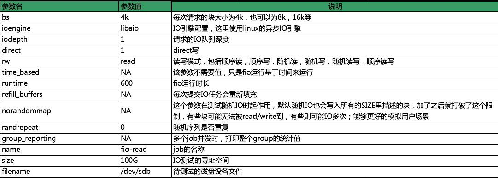

lvm2
- # yum install lvm2 -y
-
- # pvcreate /dev/sdb
-
- # vgcreate vg0 /dev/sdb
-
- # lvcreate -L 204800M -n lv0 vg0
-
- # mkfs.ext4 /dev/vg0/lv0
-
- 扩容：
-
- # pvcreate /dev/sde
-
- # vgextend vg0 /dev/sde
-
- # lvextend -L +992G /dev/vg0/lv0
-
- # resize2fs /dev/mapper/vg0-lv0
-
- # xfs_growfs /dev/mapper/vg0-lv0
- # 如果文件系统使用xfs需要 xfs_growfs进行扩容要,否则报如下错误：
- [root@es12 ~]# resize2fs /dev/mapper/vg0-lv0
- resize2fs 1.42.9 (28-Dec-2013)
- resize2fs: Bad magic number in super-block while trying to open /dev/mapper/vg0-lv0
- Couldn't find valid filesystem superblock.
FIO 测试工具
FIO是测试IOPS非常好的工具，用来对硬件进行压力测试和验证。建议使用libaio的I/O引擎进行测试，请用户自行安装FIO和Libaio。
不同场景的测试公式基本一致，只有3个参数（读写模式，ipdepth，blocksize）的区别。下面举例说明使用block size为4k，iodepth为1来测试顺序读性能的命令。
命令如下：
- fio --bs=4k --ioengine=libaio --iodepth=1 --direct=1 --rw=read --time_based --runtime=600 --refill_buffers --norandommap --randrepeat=0 --group_reporting --name=fio-read --size=100G --filename=/dev/sdb
参数说明：
注：
- --filename=/dev/vda 不能指定系统盘，容易出现异常， 可以使用--filename=/tmp/test
- --size=10G 这个值小于当前磁盘空余空间。
- block=4k iodepth=32 能反映峰值IOPS性能。

常见用例如下：
- block=4k iodepth=1 随机读测试，能反映磁盘的时延性能；
- block=128K iodepth=32 能反映峰值吞吐性能 ;
- block=4k iodepth=32 能反映峰值IOPS性能。
- [f1-1-gz@192.168.8.8 ~] fio --bs=4k --ioengine=libaio --iodepth=1 --direct=1 --rw=read --time_based --runtime=600 --refill_buffers --norandommap --randrepeat=0 --group_reporting --name=fio-read --size=100G --filename=/dev/vda
- fio-read: (g=0): rw=read, bs=4K-4K/4K-4K/4K-4K, ioengine=libaio, iodepth=1
- fio-2.2.8
- Starting 1 process
- Jobs: 1 (f=1): [R(1)] [100.0% done] [2244KB/0KB/0KB /s] [561/0/0 iops] [eta 00m:00s]
- fio-read: (groupid=0, jobs=1): err= 0: pid=27752: Thu Mar 1 16:15:54 2018
- read : io=808812KB, bw=1347.1KB/s, iops=336, runt=600036msec
- slat (usec): min=2, max=723450, avg=26.02, stdev=2773.91
- clat (usec): min=0, max=1274.1K, avg=2939.28, stdev=27891.43
- lat (usec): min=15, max=1359.3K, avg=2965.59, stdev=28374.18
- clat percentiles (usec):
- | 1.00th=[ 13], 5.00th=[ 15], 10.00th=[ 21], 20.00th=[ 636],
- | 30.00th=[ 660], 40.00th=[ 748], 50.00th=[ 1012], 60.00th=[ 1144],
- | 70.00th=[ 1288], 80.00th=[ 1672], 90.00th=[ 2768], 95.00th=[ 4256],
- | 99.00th=[16192], 99.50th=[52480], 99.90th=[536576], 99.95th=[684032],
- | 99.99th=[946176]
- bw (KB /s): min= 2, max=14785, per=100.00%, avg=1567.56, stdev=1569.23
- lat (usec) : 2=0.01%, 4=0.01%, 10=0.01%, 20=9.72%, 50=1.57%
- lat (usec) : 100=0.08%, 250=0.07%, 500=0.19%, 750=28.47%, 1000=9.41%
- lat (msec) : 2=34.99%, 4=9.86%, 10=4.09%, 20=0.71%, 50=0.31%
- lat (msec) : 100=0.17%, 250=0.14%, 500=0.10%, 750=0.08%, 1000=0.02%
- lat (msec) : 2000=0.01%
- cpu : usr=0.13%, sys=0.41%, ctx=202219, majf=0, minf=35
- IO depths : 1=100.0%, 2=0.0%, 4=0.0%, 8=0.0%, 16=0.0%, 32=0.0%, >=64=0.0%
- submit : 0=0.0%, 4=100.0%, 8=0.0%, 16=0.0%, 32=0.0%, 64=0.0%, >=64=0.0%
- complete : 0=0.0%, 4=100.0%, 8=0.0%, 16=0.0%, 32=0.0%, 64=0.0%, >=64=0.0%
- issued : total=r=202203/w=0/d=0, short=r=0/w=0/d=0, drop=r=0/w=0/d=0
- latency : target=0, window=0, percentile=100.00%, depth=1
- Run status group 0 (all jobs):
- READ: io=808812KB, aggrb=1347KB/s, minb=1347KB/s, maxb=1347KB/s, mint=600036msec, maxt=600036msec
- Disk stats (read/write):
- vda: ios=202207/72410, merge=0/242650, ticks=593643/32590785, in_queue=33263984, util=99.68%